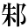
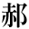
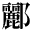
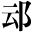
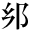
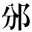

●内藤湖南『尚書稽疑』
●中島敦『李陵』
●内藤湖南『爾雅の新研究』
●橋本進吉『古代国語の音韻に就いて』
●森鴎外『青年』
●吉行エイスケ『地図に出てくる男女』
●『敬首和尚の典籍概見』
●幸田露伴『水の東京』
| 1_92_61.gif |
●石橋忍月『舞姫』 |
|
| 1_92_63.gif |
●内藤湖南『爾雅の新研究』 ●内藤湖南『尚書稽疑』 |
|
| 1_92_64.gif |
●中島敦『李陵』 |
|
|  | 1_92_65.gif |
●内藤湖南『支那歴史的思想の起源』 |
|
|
1_92_67.gif |
●桑原隲蔵『支那人の文弱と保守』 ●中島敦『李陵』 |
|  | 1_92_70.gif |
●桑原隲蔵『支那人の文弱と保守』 ●内藤湖南『爾雅の新研究』 |
| 1_92_78.gif |
●夏目漱石『吾輩は猫である』（新字・新仮名） |
|
| 1_92_79.gif |
●中島敦『李陵』 |
|
|
|
1_92_80.gif |
●桑原隲蔵『晋室の南渡と南方の開発』 ●橋本進吉『古代国語の音韻に就いて』 ●森鴎外『青年』 ●吉行エイスケ『地図に出てくる男女』 |
| 1_92_81.gif |
●桑原隲蔵『東漢の班超』 |
|
| 1_92_84.gif |
●芥川龍之介『運』 |
|
|  | 1_92_85.gif |
●内藤湖南『禹貢製作の時代』 ●『敬首和尚の典籍概見』 ●幸田露伴『水の東京』 |
|  | 2_90_7.gif |
●南方熊楠『十二支考（１）虎に関する史話と伝説民俗』 |
| 2_90_9.gif |
●内藤湖南『支那歴史的思想の起源』 |
|
| 2_90_24.gif |
●内藤湖南『支那歴史的思想の起源』 |
|
| 2_90_26.gif |
●桑原隲蔵『大師の入唐』 |
|  | gaiji001.gif |
●夏目漱石『趣味の遺伝』 |
|  | gaiji002.gif |
●内藤湖南『禹貢製作の時代』 |